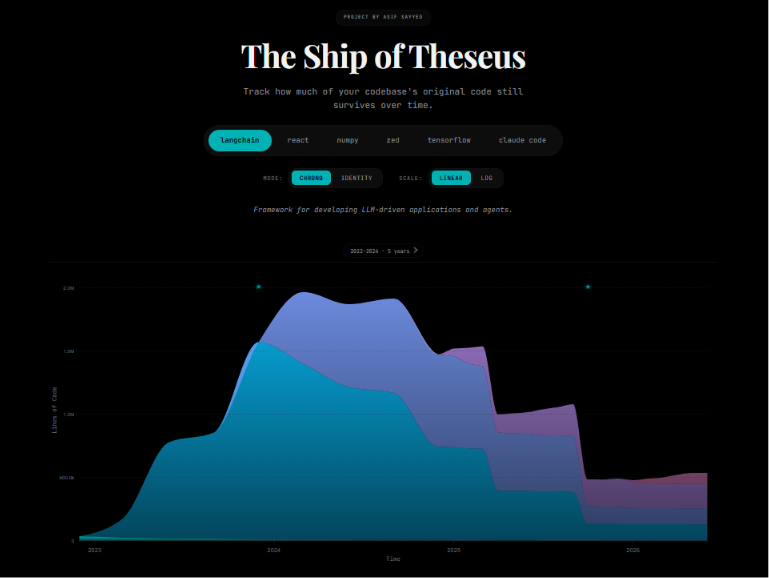

The Live App
This post covers the technical implementation of the tool. If you haven't seen the actual app yet, the technical details won't make much sense. I recommend taking a moment to look at the live website and explore the different repositories. Come back here once you've seen how codebase entropy looks in action.

The Origin
Most developers look at a massive legacy repository and wonder how it got so big. I had a different question: how much of the original code is actually left?
I was reading about the Ship of Theseus. It is an ancient Greek thought experiment that asks a simple question. If you have a famous wooden ship and slowly replace every decaying plank until no original wood remains, is it still the same ship?
This happens in software engineering every day. Repositories live for years. The original developers leave, architectures change, and eventually the very last line of the original code gets overwritten. The repository keeps its name and its URL, but the contents are entirely new. I wanted to build something that visualizes this cycle of decay and renewal.
What the Tool Does
The app visualizes how codebases change over time. It includes a few distinct views:
- The Chronological View: A stacked area chart showing the age composition of a repository over time. You can watch eras of code expand and get overwritten by newer refactors.
- The Identity View: This answers the main question. How much of the 2015 code is still alive in 2025?
- Code Fossils: The tool tracks the absolute oldest surviving lines of code. It is surprisingly fun to find a single comment or edge-case logic from 14 years ago that survived 10,000 commits. It gives some personality to the raw data.
Architecture and Database as Code
I wanted to keep the system cheap to run. The architecture splits into a disconnected data generator and a UI visualizer. They communicate through static JSON files.
(For a full breakdown of the system flow, check out the ARCHITECTURE.md file in the repo).
The frontend is intentionally lightweight. There is no React or heavy bundler. It uses plain HTML, CSS, and JavaScript to fetch theseus.config.json and render a D3 chart.
Since this is a static site hosted on GitHub Pages, the repository itself acts as the database.
GitHub Actions
Codebases never stop evolving, so the data generation relies on GitHub Actions to create an autonomous monthly update.
A scheduled Action runs every month. The engine is strictly incremental. It checks the last snapshot date and the current calendar date, then processes the missing months in between. If the resulting JSON payloads change, a bot commits the diff back to the main branch.
This approach has limits. GitHub Actions gives free users a strict 6-hour execution cap per workflow. Processing repositories with millions of lines of code and tens of thousands of commits will easily hit this wall. I had to optimize the Python engine aggressively to ensure it could catch up on missing months within the limit.
Performance Hacks
Execution time was the biggest problem. If the script takes too long, the CI cap kills the process. I solved it four ways:
- Ditching Python Git Libraries: Shelling out directly to native
gitcommands is much faster than using Python wrappers. Git is written in C and runs quickly on its own. - Parallelizing
git blame: Taking a snapshot means blaming every tracked text file. Doing that sequentially for a large repo takes weeks. I filter out binary files withgit ls-files, then use aThreadPoolExecutor(seeanalyse_repository.py) to run concurrent blame processes. - Using
--line-porcelain: Standardgit blameoutput is a pain to parse. The--line-porcelainflag outputs a machine-readable format where each line gets a metadata block with a UNIX timestamp:text 8c3f2... 1 1 author-time 1684320000 summary Add initial config filename src/config.js const config = { ... };This let me strip timestamps with a fast regex and bin them into years without writing a brittle parser. - The Fossil Protocol: Repos imported from SVN or Mercurial often have inaccurate committer timestamps. The script sorts all commits by
author-timeusinggit log --all --pretty=format:%H %at(add_fossils.py). This preserves the true origin date regardless of messy branch history.
Building the UI
I am an engineer, not a UI designer. But I knew I wanted an atmospheric, bold look for the app. To bridge my design gap, I built the UI using AI agents.
I started with StitchMCP and the Frontend skill from the Awesome Antigravity Skills repository to scaffold the layout. Once the core foundation existed, I used impeccable to iterate quickly, tweak micro-animations, and fix accessibility issues. I will write a follow-up post detailing this exact process later.
Scaling Up
The current architecture works for a personal project because it leans on GitHub Actions and a Git-based database. If I needed to track thousands of repos or provide real time updates, it would break.
To scale it, I would stop writing JSON back to the repo and move the datasets to an object store like S3 or Cloudflare R2. I would replace the single machine thread pool with a distributed worker queue for parallel blame operations. I would also add a real database like PostgreSQL or ClickHouse to allow instant querying of historical trends.
About the author
I am a developer focusing on data science and cybersecurity. Check out my portfolio or read my other deep-dives on my blog.